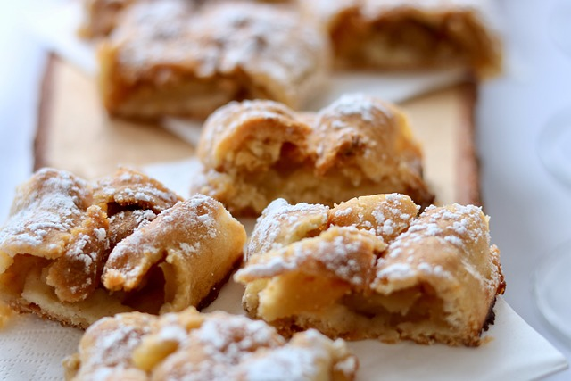

Creamy Apple Strudels are a delightful dessert made with apples, cinnamon, sugar, cream cheese, and puff pastry. The apples are cooked down with sugar and cinnamon, and then mixed with a creamy filling of cream cheese. The mixture is spooned onto squares of puff pastry, folded over, and baked until golden brown. The result is a sweet, buttery, and creamy dessert that is sure to satisfy any sweet tooth.

Creamy Apple Strudel Recipe
Ingredients:- 1 package (16 oz) of phyllo dough
- 1/2 cup unsalted butter, melted
- 2 cups peeled, cored and thinly sliced apples (about 2 medium apples)
- 1/4 cup granulated sugar
- 1 tsp ground cinnamon
- 1/2 cup heavy cream
- 1/4 cup cream cheese, softened
- 1/4 cup powdered sugar
- 1 tsp vanilla extract
- Powdered sugar, for dusting
- Preheat your oven to 375°F (190°C) and line a baking sheet with parchment paper.
- In a bowl, mix together the sliced apples, granulated sugar, and cinnamon until well combined.
- In another bowl, beat together the heavy cream, cream cheese, powdered sugar, and vanilla extract until smooth and creamy.
- Place one sheet of phyllo dough onto a clean surface and brush it generously with melted butter. Repeat this step with 7 more sheets of phyllo, layering each sheet on top of the other.
- Spread the apple mixture over the phyllo dough, leaving about an inch of space around the edges.
- Spoon the cream cheese mixture over the apples, spreading it out evenly.
- Roll the phyllo dough up tightly, tucking in the edges as you go, and place it seam-side down onto the prepared baking sheet.
- Brush the top of the strudel with more melted butter.
- Bake the strudel for 25-30 minutes, or until it is golden brown and crispy.
- Let the strudel cool for a few minutes before dusting it with powdered sugar.
- Serve the strudel warm, either on its own or with a dollop of whipped cream or vanilla ice cream on top.
- Enjoy your delicious creamy apple strudel!